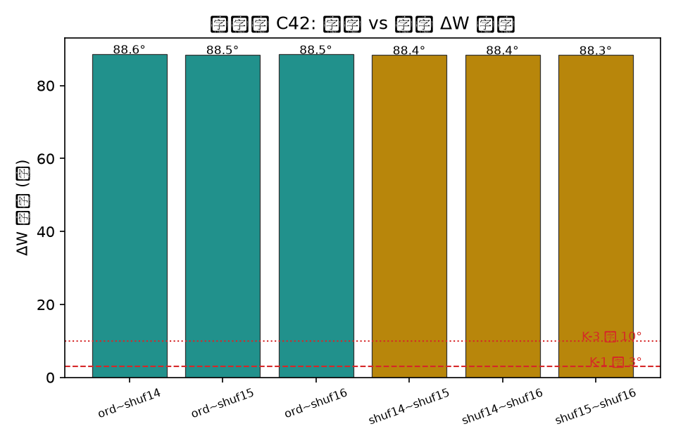
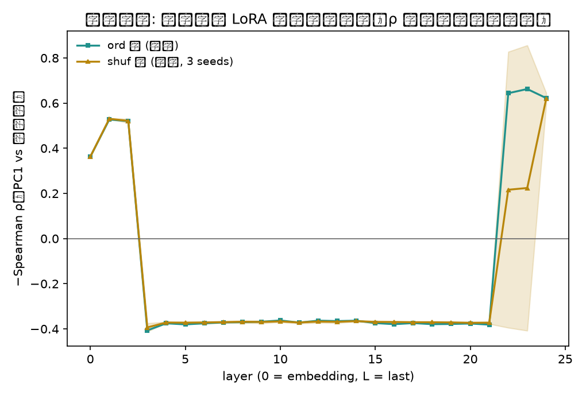
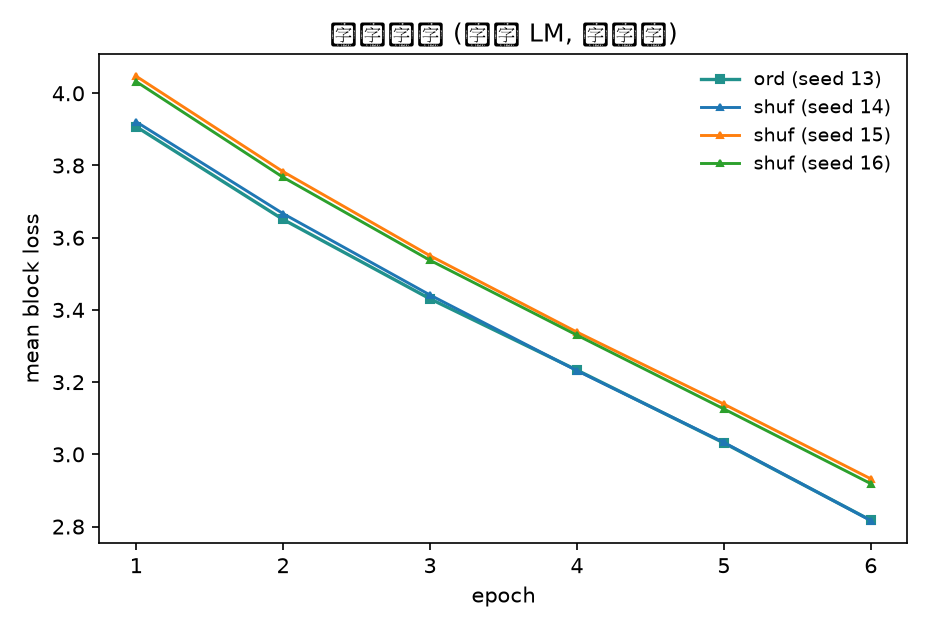

训练级 C42：有序 vs 打乱语料各训 LoRA
射击 3 · dag06 非交换律的训练级形态（三矩阵夹角）
1 背景
编码级证据（report_stage.html）只证明「同一袋卡、不同喂序 ⇒ 表征不同」， 量级是末层 ρ 的 +0.14。dag06 正律的完整形态要求训练级证据： 有序语料与打乱语料各训一个 LoRA，两个适配器的权重增量（ΔW）是否不同？ 若训练也非交换，则「序即结构」从表征层推进到权重层。
量法沿用 exp12c 园线（chora/experiments/exp12c-curriculum/）： 两两 ΔW 夹角（度），臂间夹角与 seed 散布对账。
2 园线与判据（先冻）
园线（exp12c）：r=16 / α=32 / 6 ep / lr=1e-4 / Adam β2=0.95 （β2 转写自 exp12c 记录 “b2a4”，如实标注）； 目标模块：注意力四矩阵 q/k/v/o_proj；任务：卡片流因果 LM；流切块 128 token 非重叠。
臂：
- ord：D5_baby 50 卡按年龄阶序（seed 13）
- shuf ×3：同 50 卡打乱（seeds 14/15/16）
判据（跑前登记）：
| 判 | 条件 | 解读 |
|---|---|---|
| K-1 | ord~shuf ΔW 夹角 < 3° | 时序课程序在 LoRA 尺度不可感 |
| K-2 | 3°–10° | 序效应真实但弱 |
| K-3 | > 10° | 强效应 |
| K-4 | 臂间夹角 ≤ shuf 间散布 | 一律归零 |
| K-5 | ord 臂训后探针末层 ρ ≥ shuf 臂均值 + 0.05 | 训练把时序轴刻进权重 |
3 读数



| 量 | ord~shuf | shuf~shuf 散布 |
|---|---|---|
| ΔW 夹角 | 88.61° / 88.47° / 88.53°（均值 88.54°） | 88.37° / 88.37° / 88.33°（均值 88.36°） |
- 训练曲线：ord [3.907→2.817] vs shuf [3.921→2.817]——几乎重合。
- 训后探针：ord 臂末层 ρ=+0.62，shuf 臂末层 ρ=+0.62，差 −0.002（K5 不过）； 逐层峰值 ord 在层 23（+0.66）、shuf 在层 24（+0.62）——与基座 C0 读数（+0.62）相同。
4 判词
- 实质裁决：K-4 归零。臂间夹角（88.54°）与 seed 散布（88.36°）同量级，差 0.18°—— 时序课程序在 LoRA 权重尺度不可辨。
- 判据实现教训（如实记）：脚本字面裁决落到 K-3（>10° 强效应），但这是误判—— LoRA 的 ΔW 因随机初始化天然近正交（~88.5° 是所有臂对的基线，shuf~shuf 亦然）， 绝对阈值在近正交基线下失效。exp12c 的 K-1（<3°）预设「无效课程 ⇒ ΔW 相似」， 该预设对 LoRA 不成立；量法应改为「臂间夹角 − 散布」的差值检验。
- K5 不过：6 ep 训练没有把时序轴刻进权重——训后时序轴强度与基座相同（ρ=0.62）。
- 总结论：「序即结构」目前只在编码级成立（末层 +0.14，
report_stage.html）； 训练级（6 ep LoRA、50 卡小语料）不成立——序效应没有沉到权重。 「归零」是「此预算下不可辨」，不是「序效应不存在」的证明。
5 诚实账
- 单模型（0.5B）、单 deck（D5_baby）、训练步数极少（每臂 6 ep × ~6 块）——过拟合风险高，读数是指示性的。
- β2=0.95 为转写值；若 exp12c 原值不同，角度量级会变，方向性结论应复核。
- ΔW 夹角对 LoRA 的 A/B 初始化对称性敏感——三臂同基座同分布初始化，臂间可比；实测 ~88.5° 基线说明绝对夹角不可用，应用相对对账（臂间 vs 散布）。
- 预算极小（6 ep × ~6 块 ≈ 36 步）：「归零」是「此预算下不可辨」，非存在性否定。改进方向：更多 epoch、更大语料、或改用「ΔW 在固定方向上的投影」而非夹角。
6 复现
cd benches/transformer_vis
/opt/miniconda3/envs/default/bin/python train_c42.py corpus_baby.json # → figs_c42/ + metrics_c42.json
quarto render report_c42.qmd --to html